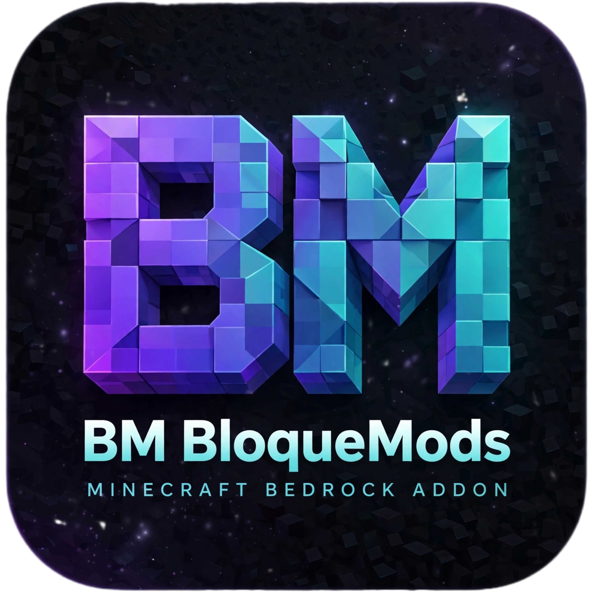

Bienvenido a BloqueMods
Descubre addons, texturas y recursos para personalizar tu experiencia en Minecraft Bedrock.
✦ Contenido para Minecraft Bedrock
Creado por Eduard Gamer Addons
Explora el catálogo
Encuentra algo nuevo para tu mundo.
🔎
No se encontraron publicaciones
Prueba otra búsqueda o categoría.